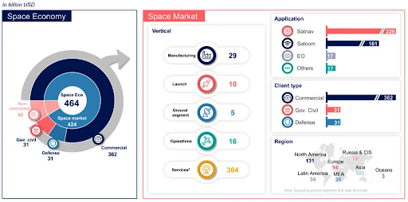
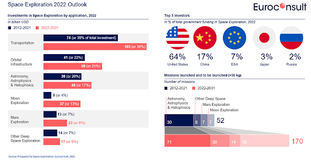
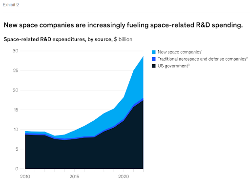
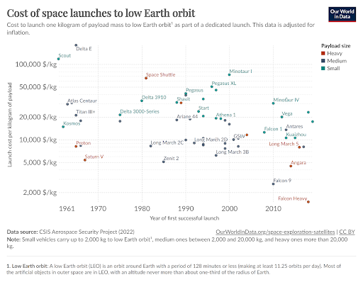
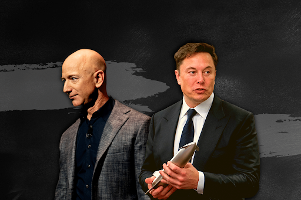

Les grands chiffres de l'économie spatiale
L'histoire de la conquête spatiale a montré l'importance des gouvernements dans des projets à haut risque et d'une grande importance pour le développement de l'humanité. Au cours de la première phase d'exploration, pendant la guerre froide, les États-Unis et l'URSS ont investi des parts importantes du budget de l'État pour soutenir un développement technologique sans précédent et coûteux. Ainsi, environ 30 milliards de dollars ont été dépensés par les États-Unis entre 1957 et l'alunissage de 1969, tandis que le programme de la navette spatiale des années 1980 a coûté environ 200 milliards de dollars. On peut donc dire que les investissements colossaux réalisés par les puissances mondiales ont formé la base d'une industrie spatiale d'une valeur d'environ 464 milliards de dollars en 2022 ( EuroConsult) avec des projections de marché de plus de 1 000 milliards de dollars d'ici 2032 (McKinsey).

Par ailleurs, si l'on considère la démographie du secteur spatial, on constate qu'il emploie environ 52 000 personnes (2021)(Euroconsult), dont 18 000 emplois en France, qui joue un rôle stratégique majeur. De plus, ce secteur à forte productivité par employé nécessite une main d'œuvre hautement qualifiée, avec plus de 54% (Euroconsult) des employés titulaires d'un master ou d'un doctorat académique.
")
L'industrie spatiale a considérablement évolué au cours des dernières décennies et son marché s'est étendu à l'échelle mondiale, atteignant plus de 70 pays dotés d'agences d'État pour l'exploration spatiale d'ici 2022. Le marché actuel est très concurrentiel au niveau mondial entre les États-Unis, la Chine, l'Europe, le Japon et la Russie, mais il attire de plus en plus le secteur privé grâce à des partenariats stratégiques. SpaceX, Thales Alenia Space, BlueOrigin, Lockheed Martin, Boeing, Northrop Grunman ne sont que quelques-uns des principaux acteurs d'un marché qui atteindra 12 milliards de dollars d'ici 2022 (McKinsey) et qui est dominé par des entreprises américaines innovantes.

Le secteur privé
L'évolution observée sur le marché de l'espace dans les économies occidentales développées laisse entrevoir la possibilité d'une domination de l'exploration spatiale par des entreprises privées au cours des prochains siècles. Ce scénario s'inspire de la réalité actuelle, où l'on assiste à un transfert des investissements dans la R&D des technologies spatiales vers les entreprises privées du marché actuel le plus développé, à savoir les États-Unis. Enfin, il est important de noter que rien qu'en 2022, 600 nouvelles start-ups ont été créées sur la planète (McKinsey) et que plusieurs contrats de la NASA dépendent entièrement du travail effectué par des entreprises telles que SpaceX et BlueOrigin, et leurs fournisseurs.

Cette ouverture du marché aux entreprises privées s'explique par le degré d'innovation et de réduction des coûts dont ont fait preuve des entreprises comme SpaceX. Après le programme "SpaceShuttle", alors que le gouvernement américain se trouvait dépassé par les programmes spatiaux de pays comme la Chine et l'Inde en termes de croissance et d'échelle, le secteur privé a commencé à offrir des services uniques et compétitifs.

Célébrités de l'espace
De toutes les figures historiques de la course à l'espace, qu'il s'agisse de Neil Armstrong et des 23 autres astronautes du programme Apollo, ou encore de Iuri Alexeievitch Gagarine, le cosmonaute russe et premier être humain à avoir voyagé dans l'espace, le rôle de l'ingénieur allemand Wernher Magnus Maximilian von Braun est l'un des plus cruciaux.
Après avoir été responsable du succès du programme allemand de missiles V2 pendant la Seconde Guerre mondiale, il a été emmené aux États-Unis pour développer les technologies de l'opération PaperClip et est devenu l'un des responsables du programme Apollo. C'est un personnage controversé en raison du travail qu'il a accompli pour les nazis pendant la Seconde Guerre mondiale et, en même temps, il a été un pionnier dans le développement de technologies qui ont été cruciales pour amener l'homme sur la lune. Ce directeur de la NASA, qui a eu un impact majeur sur le secteur, peut être comparé à des figures modernes comme Elon Musk et Jeff Bezos, des leaders de l'industrie technologique qui ont osé investir massivement dans le secteur spatial et qui récoltent aujourd'hui d'énormes bénéfices pour leurs investissements à haut risque.
Malgré les critiques, tous deux ont déclaré un intérêt sincère pour l'exploration spatiale, séparant les intérêts capitalistes de leurs visions individuelles. Elon Musk, l'un des fondateurs de Space X et défenseur des grands projets de l'entreprise tels que StarLink, une structure de télécommunication planétaire qui a pris beaucoup d'importance ces dernières années, a même déclaré qu'il rêvait de mourir sur Mars. On peut donc dire que de nombreux acteurs du secteur, tout en étant favorables à la conquête humaine de l'espace en raison des grandes avancées qu'elle permet à l'humanité (satellites, télécommunications, innovations, élargissement de la frontière de la connaissance), se sont également exposés à de nombreux risques et défendent le rôle croissant de leurs entreprises dans l'économie spatiale.

Comme vous avez pu le voir, la “conquête spatiale” est souvent présentée comme une manifestation de l’héroïsme et du génie humain, constamment poussés à repousser les frontières et à faire de nouvelles découvertes. Cette vision, promue par l’histoire officielle depuis les années 1960, a été largement acceptée et célébrée. Cependant, elle omet de nombreuses réserves et critiques qui ont émergé au fil des ans, ce qui nous amène à une réflexion plus profonde.
En effet, l’une de ces critiques concerne les implications financières de l’exploration spatiale. Cette activité coûteuse mobilise des ressources considérables. Les budgets alloués à l’exploration spatiale atteignent des milliards de dollars, des fonds qui pourraient être réaffectés à des projets plus urgents et plus terre-à-terre, tels que la lutte contre la pauvreté ou le changement climatique. Cette préoccupation a été soulignée par António Guterres, Secrétaire général des Nations Unies, lors de son discours à l’Assemblée générale de l’ONU en 2021.
Guterres a mis en évidence le contraste saisissant entre les milliardaires voyageant dans l’espace et les millions de personnes souffrant de la faim sur Terre. Selon un rapport de Bryce Tech publié en septembre 2023, 384 milliards de dollars ont été investis dans l’exploration spatiale. Ce montant est supérieur à l’estimation de 330 milliards de dollars nécessaires pour éradiquer la faim dans le monde d’ici 2030, selon l’Institut international du développement durable.
C’est dans ce contexte que des personnalités comme Jeff Bezos et Richard Branson, avec leurs entreprises respectives, Blue Origin et Virgin Galactic, sont devenues des symboles de cette dichotomie. Leurs efforts, bien que spectaculaires, ont été critiqués pour le gaspillage monumental de ressources qu’ils représentent.
Ces critiques soulignent la nécessité d’un débat plus large sur les priorités de notre société. Alors que nous célébrons les prouesses technologiques et l’audace de ceux qui repoussent les frontières de l’exploration spatiale, nous devons également nous demander si ces efforts sont les plus judicieux.
En plus, le tourisme spatial n’est qu’une des nombreuses manifestations d’un secteur en proie à de nombreuses critiques. D’autres initiatives, comme le retour annoncé sur la Lune (programme Artemis) ou l’envoi de grappes de satellites en orbite basse pour connecter toute la planète (Starlink), ont également suscité des controverses. Ces critiques invitent à ne pas voir la conquête spatiale comme une histoire enchantée et à remettre en cause le prétendu unanimisme dont, pense-t-on à tort, elle aurait bénéficié.
Dès les années 1960 aux États-Unis, des mouvements contre-culturels se sont élevés pour dénoncer les rapprochements inquiétants entre le domaine militaire et l’industrie spatiale, les coûts exorbitants de cette dernière - tant du point de vue financier qu’environnemental et, de façon plus générale, l’hubris qui la caractérise. Ces objections ont même contribué à réorienter le programme spatial américain vers des visées plus scientifiques.
À la lumière de ces luttes passées, il est donc possible d’observer la dérive actuelle du secteur spatial et d’envisager les moyens qu’il faudrait mettre en œuvre pour éviter qu’il ne devienne la chasse gardée de quelques milliardaires désinhibés.
Devrions-nous consacrer autant de ressources à l’exploration spatiale alors que tant de personnes sur Terre souffrent de la faim et de la pauvreté ? N’est-il pas temps de consacrer tous nos efforts pour la prospérité de la terre mais aussi pour le bien être de l’humanité plutôt qu’à l’éther? de Ces questions méritent d’être posées et débattues de manière ouverte et honnête, car elles touchent au cœur même de nos valeurs et de nos priorités en tant que société. En fin de compte, la “conquête spatiale” n’est pas seulement une question de technologie ou de science, mais aussi une question d’éthique et de justice sociale.